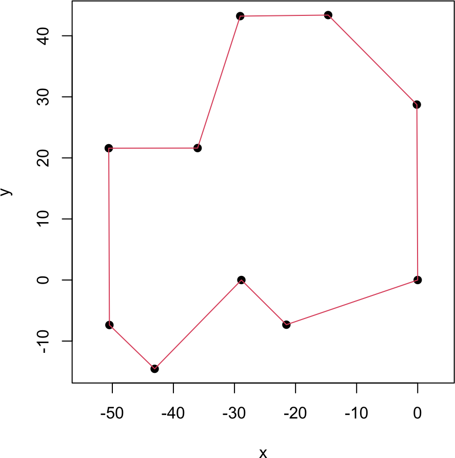
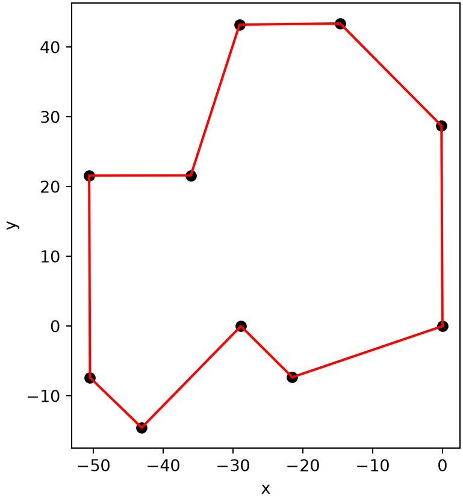

# similarity matrix: s_match on the diagonal of equal characters, s_mismatch otherwise
cal_similarity <- function(A, B, s_match, s_mismatch) {
a <- strsplit(A, "")[[1]]; b <- strsplit(B, "")[[1]]
outer(a, b, function(x, y) ifelse(x == y, s_match, s_mismatch))
}
# fill the Needleman-Wunsch score matrix
global_scoring <- function(s, gap) {
nA <- nrow(s); nB <- ncol(s)
f <- matrix(0, nA + 1, nB + 1)
f[, 1] <- (0:nA) * gap; f[1, ] <- (0:nB) * gap
for (i in 1:nA) for (j in 1:nB)
f[i + 1, j + 1] <- max(f[i, j] + s[i, j], f[i, j + 1] + gap, f[i + 1, j] + gap)
f
}
# trace back from the bottom-right corner to recover the alignment
global_traceback <- function(A, B, f, s, gap) {
a <- strsplit(A, "")[[1]]; b <- strsplit(B, "")[[1]]
A_al <- B_al <- mid <- ""; i <- length(a); j <- length(b)
while (i > 0 || j > 0) {
if (i > 0 && j > 0 && f[i + 1, j + 1] == f[i, j] + s[i, j]) {
A_al <- paste0(a[i], A_al); B_al <- paste0(b[j], B_al)
mid <- paste0(if (a[i] == b[j]) "|" else " ", mid); i <- i - 1; j <- j - 1
} else if (i > 0 && f[i + 1, j + 1] == f[i, j + 1] + gap) {
A_al <- paste0(a[i], A_al); B_al <- paste0("-", B_al); mid <- paste0(" ", mid); i <- i - 1
} else {
A_al <- paste0("-", A_al); B_al <- paste0(b[j], B_al); mid <- paste0(" ", mid); j <- j - 1
}
}
c(A_al, mid, B_al)
}
global_align <- function(A, B, s_match, s_mismatch, gap) {
s <- cal_similarity(A, B, s_match, s_mismatch)
global_traceback(A, B, global_scoring(s, gap), s, gap)
}9B. Dynamic programming
The MCMC methods of Part 9A search a landscape stochastically and are not guaranteed to find the global optimum. For a special class of problems, dynamic programming (Bellman 1957) instead finds the exact global optimum efficiently. It applies when the objective decomposes into subproblems: when the optimal score of a size-\(n\) system can be built from the optimal score of a size-\((n-1)\) subsystem plus an extra term,
\[ E_\text{tot}(n) = E_\text{tot}(n - 1) + e(n) . \tag{1} \]
We can then solve the subproblems once, store their results, and combine them, avoiding the combinatorial explosion of enumerating every configuration. We illustrate this with two classic bioinformatics alignment algorithms and with the traveling salesman problem.
9B.1 Global sequence alignment
Aligning two sequences (of nucleotides or amino acids) means transforming one into the other through matches, mismatches, and gaps (insertions or deletions). We score a match by \(S_\text{match} > 0\), a mismatch by \(S_\text{mismatch} \le 0\), and a gap by a penalty \(g \le 0\). The Needleman-Wunsch algorithm (Needleman and Wunsch 1970) finds the highest-scoring global alignment (over the whole sequences) by dynamic programming. Let \(F_{i,j}\) be the best score for aligning the first \(i\) characters of sequence \(A\) with the first \(j\) of \(B\). Then
\[ \begin{cases} F_{0,j} = j\,g , \quad F_{i,0} = i\,g , \\ F_{i,j} = \max\left( F_{i-1,j-1} + S(A_i, B_j),\ F_{i,j-1} + g,\ F_{i-1,j} + g \right) . \end{cases} \tag{2} \]
We fill the score matrix \(F\) row by row, then trace back from \(F_{n_A, n_B}\) to recover the alignment (several alignments can share the optimal score).
NoteRecipe 9B.1.1
Objective. Compute the optimal end-to-end alignment of two sequences.
Model. Sequence-alignment scoring with a match score s_match, mismatch s_mismatch, and gap penalty g; the score matrix follows F_{i,j} = max(F_{i-1,j-1} + S(A_i, B_j), F_{i,j-1} + g, F_{i-1,j} + g).
Method. The Needleman-Wunsch global alignment dynamic program (fill the score matrix, then trace back from the last cell).
Test. Sequences A = GAATTCAGTTA, B = GGATCGA; two schemes, match-only (s_match = 1, others 0) and (s_match = 3, s_mismatch = -3, gap = -2).
Show. The optimal alignment and its score for each scoring scheme.
Verification. Rewarding only matches maximizes matches regardless of gaps, while adding mismatch and gap penalties balances matches against gap cost, giving a different optimal alignment.
R implementation
# simple scores: reward matches only
A <- "GAATTCAGTTA"; B <- "GGATCGA"
cat(global_align(A, B, s_match = 1, s_mismatch = 0, gap = 0), sep = "\n")GAATTCAGTTA
| | || | |
GGA-TC-G--A# the underlying dynamic-programming score matrix F for this example
global_scoring(cal_similarity(A, B, 1, 0), gap = 0) [,1] [,2] [,3] [,4] [,5] [,6] [,7] [,8]
[1,] 0 0 0 0 0 0 0 0
[2,] 0 1 1 1 1 1 1 1
[3,] 0 1 1 2 2 2 2 2
[4,] 0 1 1 2 2 2 2 3
[5,] 0 1 1 2 3 3 3 3
[6,] 0 1 1 2 3 3 3 3
[7,] 0 1 1 2 3 4 4 4
[8,] 0 1 1 2 3 4 4 5
[9,] 0 1 2 2 3 4 5 5
[10,] 0 1 2 2 3 4 5 5
[11,] 0 1 2 2 3 4 5 5
[12,] 0 1 2 3 3 4 5 6# rewarding matches, penalizing mismatches and gaps changes the alignment
cat(global_align(A, B, s_match = 3, s_mismatch = -3, gap = -2), sep = "\n")GAATTCAGTTA
| | || | |
GGA-TC-G--APython implementation
import numpy as np
# similarity matrix: s_match where characters match, s_mismatch otherwise
def cal_similarity(A, B, s_match, s_mismatch):
a = np.array(list(A)); b = np.array(list(B))
return np.where(a[:, None] == b[None, :], s_match, s_mismatch).astype(float)
# fill the Needleman-Wunsch score matrix
def global_scoring(s, gap):
nA, nB = s.shape
f = np.zeros((nA + 1, nB + 1))
f[:, 0] = np.arange(nA + 1) * gap; f[0, :] = np.arange(nB + 1) * gap
for i in range(nA):
for j in range(nB):
f[i + 1, j + 1] = max(f[i, j] + s[i, j], f[i, j + 1] + gap, f[i + 1, j] + gap)
return f
# trace back from the bottom-right corner to recover the alignment
def global_traceback(A, B, f, s, gap):
a, b = list(A), list(B)
A_al = B_al = mid = ""; i, j = len(a), len(b)
while i > 0 or j > 0:
if i > 0 and j > 0 and f[i, j] == f[i - 1, j - 1] + s[i - 1, j - 1]:
A_al = a[i - 1] + A_al; B_al = b[j - 1] + B_al
mid = ("|" if a[i - 1] == b[j - 1] else " ") + mid; i -= 1; j -= 1
elif i > 0 and f[i, j] == f[i - 1, j] + gap:
A_al = a[i - 1] + A_al; B_al = "-" + B_al; mid = " " + mid; i -= 1
else:
A_al = "-" + A_al; B_al = b[j - 1] + B_al; mid = " " + mid; j -= 1
return [A_al, mid, B_al]
def global_align(A, B, s_match, s_mismatch, gap):
s = cal_similarity(A, B, s_match, s_mismatch)
return global_traceback(A, B, global_scoring(s, gap), s, gap)# simple scores: reward matches only
A = "GAATTCAGTTA"; B = "GGATCGA"
print("\n".join(global_align(A, B, s_match=1, s_mismatch=0, gap=0)))GAATTCAGTTA
| | || | |
GGA-TC-G--A# the underlying dynamic-programming score matrix F for this example
print(global_scoring(cal_similarity(A, B, 1, 0), gap=0))[[0. 0. 0. 0. 0. 0. 0. 0.]
[0. 1. 1. 1. 1. 1. 1. 1.]
[0. 1. 1. 2. 2. 2. 2. 2.]
[0. 1. 1. 2. 2. 2. 2. 3.]
[0. 1. 1. 2. 3. 3. 3. 3.]
[0. 1. 1. 2. 3. 3. 3. 3.]
[0. 1. 1. 2. 3. 4. 4. 4.]
[0. 1. 1. 2. 3. 4. 4. 5.]
[0. 1. 2. 2. 3. 4. 5. 5.]
[0. 1. 2. 2. 3. 4. 5. 5.]
[0. 1. 2. 2. 3. 4. 5. 5.]
[0. 1. 2. 3. 3. 4. 5. 6.]]# rewarding matches, penalizing mismatches and gaps changes the alignment
print("\n".join(global_align(A, B, s_match=3, s_mismatch=-3, gap=-2)))GAATTCAGTTA
| | || | |
GGA-TC-G--AThe | symbols mark matched positions. With only matches rewarded, the alignment maximizes matches regardless of gaps; with mismatch and gap penalties, it balances matches against the cost of introducing gaps, giving a different optimal alignment.
9B.2 Local sequence alignment
The Smith-Waterman algorithm (Smith and Waterman 1981) finds the best local alignment, the highest-scoring aligned subregion rather than the whole sequences. It changes Needleman-Wunsch in two ways: there is no initial gap penalty, and any negative score is reset to zero,
\[ \begin{cases} H_{0,j} = 0 , \quad H_{i,0} = 0 , \\ H_{i,j} = \max\left( H_{i-1,j-1} + S(A_i, B_j),\ H_{i,j-1} + g,\ H_{i-1,j} + g,\ 0 \right) . \end{cases} \tag{3} \]
The traceback starts from the largest entry of \(H\) and stops when it reaches a zero, so only the most similar stretch is aligned.
NoteRecipe 9B.2.1
Objective. Find the best-matching subsegment of two sequences.
Model. The same match/mismatch/gap scoring, with negative scores clamped to zero, H_{i,j} = max(H_{i-1,j-1} + S(A_i, B_j), H_{i,j-1} + g, H_{i-1,j} + g, 0).
Method. The Smith-Waterman local alignment dynamic program (trace back from the largest entry, stopping at a zero).
Test. Sequences A = GAATTCAGTTA, B = GGATCGA, scoring s_match = 3, s_mismatch = -3, gap = -2.
Show. The optimal local alignment, next to the global alignment for comparison.
Verification. The global alignment spans both sequences end to end, while the local alignment reports only the best-matching internal segment.
R implementation
# fill the Smith-Waterman score matrix (negative scores clamped to 0)
local_scoring <- function(s, gap) {
nA <- nrow(s); nB <- ncol(s)
h <- matrix(0, nA + 1, nB + 1)
for (i in 1:nA) for (j in 1:nB)
h[i + 1, j + 1] <- max(h[i, j] + s[i, j], h[i, j + 1] + gap, h[i + 1, j] + gap, 0)
h
}
# trace back from the highest-scoring cell until a zero is reached
local_traceback <- function(A, B, h, s, gap) {
a <- strsplit(A, "")[[1]]; b <- strsplit(B, "")[[1]]
A_al <- B_al <- mid <- ""
ind <- which(h == max(h), arr.ind = TRUE)
i <- ind[nrow(ind), 1] - 1; j <- ind[nrow(ind), 2] - 1
while ((i > 0 || j > 0) && h[i + 1, j + 1] > 0) {
if (i > 0 && j > 0 && h[i + 1, j + 1] == h[i, j] + s[i, j]) {
A_al <- paste0(a[i], A_al); B_al <- paste0(b[j], B_al)
mid <- paste0(if (a[i] == b[j]) "|" else " ", mid); i <- i - 1; j <- j - 1
} else if (i > 0 && h[i + 1, j + 1] == h[i, j + 1] + gap) {
A_al <- paste0(a[i], A_al); B_al <- paste0("-", B_al); mid <- paste0(" ", mid); i <- i - 1
} else {
A_al <- paste0("-", A_al); B_al <- paste0(b[j], B_al); mid <- paste0(" ", mid); j <- j - 1
}
}
c(A_al, mid, B_al)
}
local_align <- function(A, B, s_match, s_mismatch, gap) {
s <- cal_similarity(A, B, s_match, s_mismatch)
local_traceback(A, B, local_scoring(s, gap), s, gap)
}# compare global and local alignments with the same scoring
A <- "GAATTCAGTTA"; B <- "GGATCGA"
cat("Global:", global_align(A, B, 3, -3, -2), sep = "\n")Global:
GAATTCAGTTA
| | || | |
GGA-TC-G--Acat("\nLocal:", local_align(A, B, 3, -3, -2), sep = "\n")
Local:
GAATTC-A
| | || |
G-A-TCGAPython implementation
# fill the Smith-Waterman score matrix (negative scores clamped to 0)
def local_scoring(s, gap):
nA, nB = s.shape
h = np.zeros((nA + 1, nB + 1))
for i in range(1, nA + 1):
for j in range(1, nB + 1):
h[i, j] = max(h[i - 1, j - 1] + s[i - 1, j - 1], h[i - 1, j] + gap,
h[i, j - 1] + gap, 0)
return h
# trace back from the highest-scoring cell until a zero is reached
def local_traceback(A, B, h, s, gap):
a, b = list(A), list(B)
A_al = B_al = mid = ""
i, j = np.unravel_index(np.argmax(h), h.shape)
while (i > 0 or j > 0) and h[i, j] > 0:
if i > 0 and j > 0 and h[i, j] == h[i - 1, j - 1] + s[i - 1, j - 1]:
A_al = a[i - 1] + A_al; B_al = b[j - 1] + B_al
mid = ("|" if a[i - 1] == b[j - 1] else " ") + mid; i -= 1; j -= 1
elif i > 0 and h[i, j] == h[i - 1, j] + gap:
A_al = a[i - 1] + A_al; B_al = "-" + B_al; mid = " " + mid; i -= 1
else:
A_al = "-" + A_al; B_al = b[j - 1] + B_al; mid = " " + mid; j -= 1
return [A_al, mid, B_al]
def local_align(A, B, s_match, s_mismatch, gap):
s = cal_similarity(A, B, s_match, s_mismatch)
return local_traceback(A, B, local_scoring(s, gap), s, gap)# compare global and local alignments with the same scoring
A = "GAATTCAGTTA"; B = "GGATCGA"
print("Global:\n" + "\n".join(global_align(A, B, 3, -3, -2)))Global:
GAATTCAGTTA
| | || | |
GGA-TC-G--Aprint("\nLocal:\n" + "\n".join(local_align(A, B, 3, -3, -2)))
Local:
GAATTC-A
| | || |
G-A-TCGAThe global alignment spans both sequences end to end, padding with gaps, while the local alignment reports only the best-matching internal segment.
9B.3 The traveling salesman problem
The traveling salesman problem (TSP) asks for the shortest route that visits each of \(n\) cities once and returns to the start. Dynamic programming solves it exactly via the Held-Karp algorithm (Held and Karp 1962). Fixing city 1 as the start, let \(g(x, z)\) be the length of the shortest path from city 1 to city \(x\) that passes through exactly the set of cities \(z\). It satisfies
\[ g(x, z) = \min_{i \in z}\left( g(i, z \setminus i) + d(i, x) \right) , \tag{4} \]
where \(z \setminus i\) removes city \(i\) from \(z\) and \(d(i, x)\) is the distance between cities \(i\) and \(x\). Recursing down to the empty set and remembering the best \(i\) at each step lets us reconstruct the optimal tour. The implementation is remarkably short.
NoteRecipe 9B.3.1
Objective. Find the exact shortest tour through a set of cities.
Model. The traveling salesman problem: the shortest closed route visiting each of n cities once, from a Euclidean distance matrix; the Held-Karp recurrence is g(x, S) = min over i in S of (g(i, S without i) + d(i, x)).
Method. Dynamic programming for the traveling salesman problem (the Held-Karp algorithm).
Test. 10 cities with x = (0, -28.87, -14.66, -29.06, -36.04, -50.48, -50.59, -0.14, -21.50, -43.07) and y = (0, 0, 43.39, 43.22, 21.61, -7.37, 21.59, 28.73, -7.32, -14.55), Euclidean distances; the tour starting and ending at city 1.
Show. The shortest tour drawn through the ten cities, with its length.
Verification. It returns the exact shortest tour through all ten cities; the cost is O(n^2 * 2^n), so it stays practical only for small n.
R implementation
# shortest path from city 1 to city x visiting the set z, by Held-Karp recursion
tsp_dp <- function(d, x, z) {
if (length(z) == 0) return(list(g = d[1, x], pos = 1))
g <- Inf
for (i in z) {
r <- tsp_dp(d, i, z[z != i]); dis <- r$g + d[i, x]
if (dis < g) { g <- dis; pos <- c(r$pos, i) }
}
list(g = g, pos = pos)
}
# ten cities
cities <- data.frame(
x = c(0, -28.87, -14.66, -29.06, -36.04, -50.48, -50.59, -0.14, -21.50, -43.07),
y = c(0, 0.00, 43.39, 43.22, 21.61, -7.37, 21.59, 28.73, -7.32, -14.55))
n <- nrow(cities)
d <- as.matrix(dist(cities))
route <- tsp_dp(d, 1, 2:n)$pos
par(pty = "s")
plot(cities$x, cities$y, pch = 19, xlab = "x", ylab = "y", asp = 1)
lines(cities$x[c(route, route[1])], cities$y[c(route, route[1])], col = 2)
Python implementation
import matplotlib.pyplot as plt
# shortest path from city 0 to city x visiting the set z, by Held-Karp recursion
def tsp_dp(d, x, z):
if len(z) == 0:
return {"g": d[0, x], "pos": [0]}
g = float("inf")
for i in z:
r = tsp_dp(d, i, [c for c in z if c != i]); dis = r["g"] + d[i, x]
if dis < g:
g = dis; pos = r["pos"] + [i]
return {"g": g, "pos": pos}
# ten cities
cities = np.array([[0, 0], [-28.87, 0], [-14.66, 43.39], [-29.06, 43.22], [-36.04, 21.61],
[-50.48, -7.37], [-50.59, 21.59], [-0.14, 28.73], [-21.50, -7.32], [-43.07, -14.55]])
n = len(cities)
d = np.linalg.norm(cities[:, None, :] - cities[None, :, :], axis=-1)
route = tsp_dp(d, 0, list(range(1, n)))["pos"]
loop = route + [route[0]]
plt.figure(figsize=(5, 5))
plt.plot(cities[:, 0], cities[:, 1], "o", color="black")
plt.plot(cities[loop, 0], cities[loop, 1], color="red")
plt.gca().set_aspect("equal"); plt.xlabel("x"); plt.ylabel("y"); plt.show()
The algorithm returns the exact shortest tour through all ten cities. Held-Karp costs \(O(n^2 2^n)\) time when the subproblem results are stored, far less than the \(O(n!)\) of checking every permutation, but still exponential: it is practical only for small \(n\) (the recursion above recomputes shared subproblems, so memoizing them would be needed to realize the full speedup). Larger instances need the approximate methods of the next chapters.